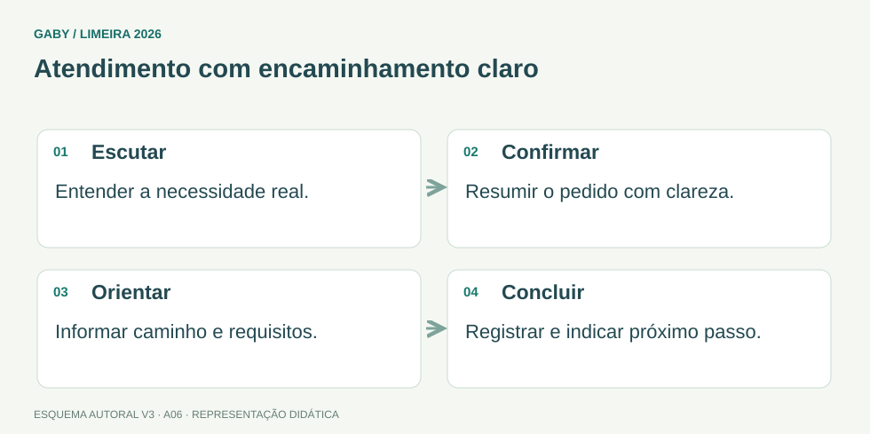

Objetivos do módulo
- Aplicar princípios de atendimento claro, respeitoso e objetivo.
- Registrar recados e demandas com precisão.
- Encaminhar corretamente sem abandonar o usuário.
- Explicar o processo de comunicação: emissor, receptor, mensagem, canal, código, contexto, ruído e feedback.
- Distinguir comunicação verbal e não verbal e aplicar escuta ativa e empatia, inclusive ao telefone.
- Localizar na Lei 13.460/2017 as diretrizes do atendimento, os direitos e deveres do usuário, a Carta de Serviços, as manifestações, a ouvidoria, os conselhos de usuários e a avaliação dos serviços.
- Aplicar os prazos da ouvidoria (trinta e vinte dias) e as regras de prioridade e de simplificação de exigências.
Atendimento com encaminhamento claro

Descrição em texto do esquema
- Escutar: Entender a necessidade real.
- Confirmar: Resumir o pedido com clareza.
- Orientar: Informar caminho e requisitos.
- Concluir: Registrar e indicar próximo passo.
Oficina visual · aplique o esquema
Um usuário está irritado com um atraso. Escreva uma resposta que acolha a demanda sem prometer um prazo que você não conhece.
Atividade autoral complementar da V3. Registre sua resposta; a resolução está no arquivo de gabarito e revisão.
Mapa do conteúdo
- 1. Atendimento é processo
- 2. Comunicação interpessoal
- 3. Recepção e triagem
- 4. Registro de recados
- 5. Encaminhamento
- 6. Situações difíceis
- 7. Lei 13.460/2017: alcance, definições e princípios
- 8. Diretrizes do atendimento (art. 5º)
- 9. Direitos básicos e deveres do usuário
- 10. Carta de Serviços ao Usuário
- 11. Manifestações do usuário
- 12. Ouvidorias: atribuições, relatório e prazos
- 13. Conselhos de usuários e avaliação dos serviços
- 14. Normas relacionadas: prioridade, simplificação e dados pessoais
1. Atendimento é processo
Atender bem não significa apenas ser cordial. Envolve compreender a demanda, confirmar entendimento, fornecer informação correta, registrar quando necessário e encaminhar ao setor competente. Qualidade combina precisão, respeito e resolutividade.
Atendimento e tratamento
O curso “Atendimento ao Cidadão”, da Escola Nacional de Administração Pública (ENAP), separa duas ideias que a prova costuma misturar:
| Conceito | O que é | Exemplo |
|---|---|---|
| Atendimento | Satisfazer a demanda de informação, produto ou serviço apresentada pelo cidadão. | A segunda via do carnê é emitida na hora. |
| Tratamento | A forma como o usuário é recebido e atendido. | O servidor cumprimenta, ouve e explica com paciência. |
Bom atendimento é a soma dos dois: bom tratamento e demanda resolvida no prazo (tempestividade) e por completo (suficiência). Quem é recebido com um sorriso e sai sem a informação de que precisava foi bem tratado, mas não foi bem atendido.
O que define a qualidade do atendimento
- Expectativas do usuário. A qualidade do atendimento não depende só do serviço em si. O usuário compara o que esperava com o que recebeu; por isso a forma de atender e a clareza da informação pesam tanto quanto o resultado.
- Responsabilidade de todos. Atender o público não é tarefa só do balcão ou da recepção. Quem cadastra, confere ou arquiva também interfere no resultado que o cidadão recebe. A ENAP chama isso de visão sistêmica do atendimento.
- Orientar mesmo quando o pedido não procede. Se a pessoa não tem o direito que pretende, o atendimento não termina no “não”. Explique o motivo com objetividade e indique, quando houver, o caminho correto. O indeferimento desagrada, mas a forma de apresentá-lo reduz o desconforto.
- Limite das atribuições. O atendente não é julgador do cidadão nem decide o que cabe a outro setor. Informa, registra e encaminha a quem tem competência.
- Atendimento humanizado. Tratar a pessoa com respeito e atenção favorece a satisfação do usuário e a harmonia do ambiente de trabalho. É a aplicação prática da urbanidade, do respeito e da cortesia do art. 5º, I, da Lei 13.460/2017 (seção 8).
2. Comunicação interpessoal
Escuta ativa exige atenção, perguntas de esclarecimento e confirmação. Linguagem deve ser compreensível ao público, evitando jargão desnecessário. Tom profissional não significa frieza.
Elementos do processo de comunicação
Comunicar é fazer uma mensagem sair de uma pessoa e chegar a outra com o mesmo sentido. O Manual de Redação da Presidência da República resume o mínimo necessário: alguém que comunique, algo a ser comunicado e alguém que receba. Os manuais de comunicação detalham esse processo em elementos, e as provas cobram o nome de cada um.
| Elemento | O que é | No balcão da prefeitura |
|---|---|---|
| Emissor | Quem produz e envia a mensagem. | A atendente que explica quais documentos trazer. |
| Receptor | Quem recebe e interpreta a mensagem. | O munícipe que ouve a explicação. |
| Mensagem | O conteúdo transmitido. | “Traga documento com foto e comprovante de endereço.” |
| Canal | O meio pelo qual a mensagem passa. | A fala no guichê, o telefone, o e-mail, um cartaz. |
| Código | O sistema de sinais usado, que os dois precisam dominar. | A língua portuguesa; para um usuário surdo, a Libras. |
| Contexto | A situação em que a comunicação acontece e a que a mensagem se refere. | Um pedido de isenção de taxa, no último dia do prazo. |
| Ruído | Qualquer interferência que distorce ou atrapalha a mensagem. | Barulho da sala de espera, sigla que o usuário desconhece. |
| Feedback | A resposta ou reação do receptor, que volta ao emissor. | O munícipe repete: “Então trago a identidade e a conta de água?” |
Quando o receptor responde, os papéis se invertem: ele passa a ser o emissor da resposta. Por isso a comunicação no atendimento é uma via de mão dupla.
Feedback
Feedback (retroalimentação) é o retorno que o receptor dá à mensagem. É por ele que o emissor descobre se foi entendido e corrige a falha a tempo. No atendimento, o servidor usa o feedback de duas maneiras:
- Dá feedback ao cidadão: resume o pedido com as próprias palavras para confirmar que entendeu.
- Pede feedback: solicita que a pessoa diga o que entendeu da orientação. Se for preciso repetir, prefira “não expliquei direito” a “você não entendeu”.
Não confunda: feedback é a resposta; canal é o meio; código é o sistema de sinais; ruído é o que atrapalha; contexto é a situação.
Ruído e barreiras da comunicação
Ruído não é só barulho. É tudo o que impede a mensagem de chegar inteira. As barreiras mais citadas em prova são:
| Barreira | Origem | Exemplo |
|---|---|---|
| Física | Ambiente ou equipamento. | Telefone com chiado; guichê com vidro e sem microfone. |
| Semântica (ruído semântico) | Significado das palavras: termo desconhecido ou entendido de outro modo. | Dizer “o processo está sobrestado” a quem não conhece a palavra. |
| Psicossocial | Emoções, valores, preconceitos e diferenças sociais ou culturais entre as pessoas. | O usuário chega irritado e ouve tudo como provocação; o atendente julga a pessoa pela aparência. |
A interferência pode estar no emissor (fala depressa), no receptor (está distraído), no canal (ligação ruim) ou na mensagem (confusa, longa demais). Reduzir ruído é tarefa de quem atende: falar uma informação por vez, usar frases curtas e conferir o entendimento.
Comunicação verbal e não verbal
| Tipo | Como se realiza | Cuidados no atendimento |
|---|---|---|
| Verbal | Pela palavra falada ou escrita. | Vocabulário que o usuário entende; frases curtas; uma informação por vez. |
| Não verbal | Pela linguagem corporal: postura, gestos, olhar e expressão facial. | Parar o que está fazendo, olhar para a pessoa, manter semblante tranquilo; evitar braços cruzados e ficar de costas. |
A comunicação não verbal pode reforçar ou contradizer o que se diz. Falar “pode falar, estou ouvindo” sem tirar os olhos da tela transmite desinteresse. O tom de voz também comunica: a mesma frase soa acolhedora ou ríspida conforme a entonação. Quem atende cuida das palavras e também do modo de dizê-las.
Diferenças entre as pessoas
Cada pessoa reage de um jeito ao mesmo fato. O comportamento de alguém reflete a educação que recebeu, o meio em que vive e a maneira como percebe a sociedade. Por isso as reações do público não são previsíveis nem uniformes, e um roteiro único aplicado a todos não funciona.
O servidor que leva essas diferenças em conta ameniza atritos: ajusta a linguagem a cada interlocutor, não toma a irritação como ofensa pessoal e não presume que o outro sabe o que ele sabe. É para isso que servem as técnicas de comunicação interpessoal.
Escuta ativa, empatia e atendimento humanizado
- Escuta ativa: ouvir até o fim, sem interromper e sem preparar a resposta durante a fala do outro; anotar os pontos a esclarecer e retomá-los depois; fazer perguntas e confirmar o entendimento. Ouve-se para compreender, não para responder.
- Empatia: colocar-se no lugar do outro, compreendendo o sentimento ou a reação da pessoa como se estivesse na mesma situação. Não é concordar com tudo nem prometer o que não pode.
- Diálogo: a conversa tem ida e volta. Quem só lê um texto padronizado não dialoga.
Atendimento humanizado é o que combina esses três pontos e considera as particularidades de cada cidadão. Ele vale em qualquer canal: presencial, telefone ou meio eletrônico. Repassar a informação correta de forma mecânica, interrompendo a pessoa e encerrando sem verificar se a dúvida foi resolvida, cumpre a parte técnica e falha na humanização. A responsabilidade de se fazer entender é de quem atende, e não só do cidadão.
Linguagem: gírias, jargões, siglas e termos técnicos
A linguagem do atendimento é profissional e simples ao mesmo tempo. O art. 5º, XIV, da Lei 13.460/2017 manda usar linguagem simples e compreensível, evitando siglas, jargões e estrangeirismos.
- Gírias: um termo informal ocasional é compreensível, mas carregar a fala de gírias a torna inconveniente para o contexto profissional e compromete o padrão do atendimento. Além disso, gírias mudam de grupo para grupo e podem não ser entendidas. Atenção ao exagero em prova: a gíria não impede a compreensão de todo e qualquer usuário; o problema é a inadequação ao contexto.
- Jargões e termos técnicos: só use se tiver certeza de que o interlocutor conhece; caso contrário, explique. Termo difícil não demonstra profissionalismo.
- Siglas: facilitam a comunicação interna, mas devem ser “traduzidas” para o público.
Usar linguagem simples não é imitar o modo de falar do usuário nem abandonar a norma padrão. É escolher palavras conhecidas e conferir se foram entendidas.
3. Recepção e triagem
Triagem identifica natureza, urgência, documentos necessários e destino. O atendente não deve inventar resposta fora de sua competência; é melhor confirmar fonte ou encaminhar de forma responsável.
Boas práticas de recepção
- Cumprimentar quem chega, mesmo que não possa atender na hora. O cumprimento mostra que a presença foi notada.
- Atitude amigável e prestativa: oferecer ajuda e orientar além do estritamente perguntado quando isso evita um retorno desnecessário. Responder só o que foi perguntado, sem iniciativa, reduz a qualidade do serviço.
- Ouvir com paciência, sem apressar a pessoa.
- Tratar todos com igualdade. Conhecidos, autoridades e ocupantes de cargos superiores não passam à frente. O art. 5º, V, da Lei 13.460/2017 veda qualquer tipo de discriminação; as únicas preferências são as previstas em lei (seções 8 e 14).
- Não interromper o atendimento em curso. Quem está no balcão não deve ser deixado de lado para o servidor atender o telefone ou conversar com colegas. Se a interrupção for inevitável, peça licença e retorne logo.
- Forma de tratamento: “senhor” e “senhora” são o padrão; evite apelidos, diminutivos e intimidades.
4. Registro de recados
Um recado útil contém quem procurou, para quem, assunto essencial, contato, data/hora e quem registrou, conforme rotina. Dados pessoais devem ser tratados com discrição.
Atendimento telefônico
Ao telefone não há gestos nem expressão facial: a voz e as palavras fazem todo o trabalho. As regras de cortesia são as mesmas do balcão.
- Atenda logo e identifique-se: nome do setor, seu nome e cumprimento. Exemplo: “Protocolo, Marina, bom dia”.
- Tom de voz: fale com clareza, em volume normal e ritmo moderado. Elevar a voz não melhora a compreensão e soa agressivo; se a pessoa não entendeu, fale mais devagar ou reformule.
- Concentre-se na ligação: não atenda fazendo outra tarefa nem conversando com terceiros.
- Ligação por engano ou para outro setor: a cortesia continua obrigatória. Não desligue de imediato: informe o número ou o setor correto ou transfira a chamada.
- Transferência: avise a pessoa de que vai transferir e para onde; quando possível, adiante o assunto ao colega para que o usuário não precise repetir tudo.
- Espera: se precisar consultar algo, diga quanto tempo deve levar ou ofereça retornar a ligação.
- Encerramento: confirme se a dúvida foi resolvida, agradeça e deixe o usuário desligar primeiro.
Recados telefônicos. O recado existe justamente para quando o destinatário está ausente; portanto, deve ser sempre repassado. Anote os dados completos, e não só o “principal”: quem ligou, de onde, telefone para retorno, assunto, data e hora, e quem anotou. Leia o recado de volta para confirmar nomes e números.
5. Encaminhamento
Encaminhar é direcionar ao setor/pessoa competente, oferecendo contexto suficiente para evitar repetição desnecessária. Quando possível, informe prazo/canal e próximos passos.
6. Situações difíceis
Em conflito, mantenha foco no problema, não personalize a discussão, não prometa o que não pode cumprir e respeite limites de segurança. Comunicação assertiva combina firmeza, respeito e clareza.
Cidadão exaltado: como reduzir o conflito
Quando a pessoa eleva a voz e gesticula, a primeira providência não é explicar a norma nem mandar que se acalme. A ordem que funciona é:
- Manter a calma. Fale em tom sereno. A agressividade que não é correspondida tende a diminuir. A irritação é com a situação, não com você.
- Ouvir ativamente. Deixe a pessoa falar até o fim e demonstre que acompanha o relato.
- Demonstrar empatia. Reconheça o transtorno: “Entendo que a demora tenha causado problema para o senhor”.
- Só então explicar e encaminhar. Diga o que pode ser feito, por quem e em que prazo. Se a falha foi do órgão, peça desculpas em nome dele.
| Reação inadequada como primeira resposta | Por que falha |
|---|---|
| Exigir que a pessoa se acalme antes de continuar. | Soa como censura e aumenta a irritação. |
| Repetir de imediato as normas do procedimento. | A pessoa ainda não se sentiu ouvida; a explicação não é assimilada. |
| Ignorar a emoção e tratar só dos fatos. | Desconsidera a pessoa; contraria a empatia. |
| Mandar o caso direto para outro setor (jurídico, chefia). | Transfere o problema sem acolher a demanda. |
Respeito vale para os dois lados: o servidor não é obrigado a tolerar ofensa ou ameaça. Nesses casos, comunique o limite com firmeza e siga o procedimento de segurança da unidade.
7. Lei 13.460/2017: alcance, definições e princípios
A Lei 13.460/2017 trata da participação, proteção e defesa dos direitos do usuário dos serviços públicos. É a principal norma cobrada em atendimento ao público. As seções 7 a 13 seguem a ordem dos artigos; em cada tabela, a última coluna mostra como o dispositivo costuma aparecer em prova.
| Dispositivo | O que determina | Como cai |
|---|---|---|
| Art. 1º, caput | A lei fixa normas básicas para participação, proteção e defesa dos direitos do usuário dos serviços públicos prestados direta ou indiretamente pela administração pública. | Vale para serviço prestado pelo próprio órgão ou por quem o presta em nome dele. |
| Art. 1º, § 1º | Aplica-se à administração pública direta e indireta da União, dos Estados, do Distrito Federal e dos Municípios. | Erro clássico: “só vale para órgãos federais”. A prefeitura e suas autarquias estão incluídas. |
| Art. 1º, § 2º | A lei não dispensa o cumprimento de normas regulamentadoras específicas (serviço regulado) nem do Código de Defesa do Consumidor, quando houver relação de consumo. | As normas se somam; uma não exclui a outra. |
| Art. 1º, § 3º | Aplica-se subsidiariamente aos serviços públicos prestados por particular. | “Subsidiariamente” = no que a regra própria não tratar. |
| Art. 2º, I | Usuário: pessoa física ou jurídica que se beneficia ou utiliza, efetiva ou potencialmente, de serviço público. | Quem ainda não usou, mas pode usar, já é usuário. Empresa também é. Não se exige pagamento de tarifa. |
| Art. 2º, II | Serviço público: atividade administrativa ou de prestação direta ou indireta de bens ou serviços à população, exercida por órgão ou entidade da administração pública. | Inclui a atividade administrativa (por exemplo, emitir certidão). |
| Art. 2º, III | Administração pública: órgão ou entidade de qualquer dos Poderes da União, dos Estados, do Distrito Federal e dos Municípios, a Advocacia Pública e a Defensoria Pública. | Alcança Executivo, Legislativo e Judiciário. |
| Art. 2º, IV | Agente público: quem exerce cargo, emprego ou função pública, civil ou militar, ainda que transitoriamente ou sem remuneração. | Quem exerce função temporária ou sem remuneração também é agente público. |
| Art. 2º, V | Manifestações: reclamações, denúncias, sugestões, elogios e demais pronunciamentos sobre a prestação de serviços públicos e a conduta de agentes públicos. | Elogio e sugestão também são manifestações, não só reclamação. |
| Art. 2º, parágrafo único | O acesso do usuário a informações segue a Lei 12.527/2011 (Lei de Acesso à Informação, LAI). | Pedido de informação tem lei própria. |
| Art. 3º | Com periodicidade mínima anual, cada Poder e esfera de governo publica o quadro geral dos serviços públicos prestados, indicando os órgãos ou entidades responsáveis e a autoridade a quem estão subordinados ou vinculados. | Mínimo: uma vez por ano. Não confundir com a Carta de Serviços (art. 7º), que é de cada órgão. |
| Art. 4º | Serviços e atendimento devem ser prestados de forma adequada, observados os princípios da regularidade, continuidade, efetividade, segurança, atualidade, generalidade, transparência e cortesia. | São oito princípios. A cortesia é princípio legal, não mera gentileza. |
8. Diretrizes do atendimento (art. 5º)
O art. 5º da Lei 13.460/2017 garante ao usuário a adequada prestação dos serviços e lista as diretrizes que agentes públicos e prestadores devem observar. É o artigo mais cobrado: a prova descreve uma situação de balcão e pede a diretriz desrespeitada.
| Dispositivo | O que determina | Como cai |
|---|---|---|
| Art. 5º, I | Urbanidade, respeito, acessibilidade e cortesia no atendimento. | Fundamento legal das boas práticas de recepção, do atendimento telefônico e do atendimento humanizado. |
| Art. 5º, II | Presunção de boa-fé do usuário. | Parte-se de que o usuário diz a verdade. Não se exige prova de que “não está mentindo” sem indício concreto. A presunção não impede conferir documentos nem apurar fraude, e não garante deferimento. |
| Art. 5º, III | Atendimento por ordem de chegada, ressalvados os casos de urgência e aqueles em que houver possibilidade de agendamento, asseguradas as prioridades legais às pessoas com deficiência, aos idosos, às gestantes, às lactantes e às pessoas acompanhadas por crianças de colo. | A fila tem três ressalvas: urgência, agendamento e prioridades legais. Atender a prioridade não fere a igualdade. |
| Art. 5º, IV | Adequação entre meios e fins, vedada a imposição de exigências, obrigações, restrições e sanções não previstas na legislação. | O balcão não cria exigência. Corrigir o excesso não elimina os requisitos que a lei prevê. |
| Art. 5º, V | Igualdade no tratamento aos usuários, vedado qualquer tipo de discriminação. | Não há preferência para conhecidos, autoridades ou quem “pode pagar mais”. |
| Art. 5º, VI | Cumprimento de prazos e normas procedimentais. | O órgão cumpre os prazos e ritos que ele mesmo divulga. |
| Art. 5º, VII | Definição, publicidade e observância de horários e normas compatíveis com o bom atendimento ao usuário. | São três verbos: definir, divulgar e cumprir os horários. Encerrar o atendimento antes do horário divulgado, sem justificativa nem nova divulgação, viola a diretriz. |
| Art. 5º, VIII | Adoção de medidas visando à proteção à saúde e à segurança dos usuários. | Fila ou sala de espera em condição de risco exige providência; ordem de chegada não justifica manter o risco. |
| Art. 5º, IX | Autenticação de documentos pelo próprio agente público, à vista dos originais apresentados pelo usuário; vedada a exigência de reconhecimento de firma, salvo em caso de dúvida de autenticidade. | Com original e cópia em mãos, o servidor confere e autentica. Firma reconhecida só se houver dúvida de autenticidade. |
| Art. 5º, X | Manutenção de instalações salubres, seguras, sinalizadas, acessíveis e adequadas ao serviço e ao atendimento. | Trata das condições físicas do local. Cartaz institucional não substitui acesso seguro e sinalização. |
| Art. 5º, XI | Eliminação de formalidades e de exigências cujo custo econômico ou social seja superior ao risco envolvido. | Compara-se o custo da exigência com o risco que ela evita. Simplificar não é abandonar controle necessário. |
| Art. 5º, XII | Observância dos códigos de ética ou de conduta aplicáveis às categorias de agentes públicos. | Liga o atendimento ao tema de ética. |
| Art. 5º, XIII | Aplicação de soluções tecnológicas que simplifiquem processos e procedimentos de atendimento e facilitem o compartilhamento das informações. | Tecnologia a serviço da simplificação. |
| Art. 5º, XIV | Utilização de linguagem simples e compreensível, evitando o uso de siglas, jargões e estrangeirismos. | Formulário cheio de siglas internas contraria a diretriz. A correção é explicar, não acrescentar mais termos técnicos. |
| Art. 5º, XV | Vedação da exigência de nova prova sobre fato já comprovado em documentação válida apresentada. | Fato já comprovado por documento válido não se comprova de novo. Fato novo ou alterado é outra situação. |
| Art. 5º, XVI e parágrafo único | Comunicação prévia ao consumidor de que o serviço será desligado por inadimplemento e do dia do desligamento, em horário comercial (incluídos pela Lei 14.015/2020). Sem a notificação, não se cobra taxa de religação. | Trata de serviço que pode ser desligado por falta de pagamento. |
9. Direitos básicos e deveres do usuário
Direitos básicos (art. 6º)
| Dispositivo | O que determina | Como cai |
|---|---|---|
| Art. 6º, I | Participação no acompanhamento da prestação e na avaliação dos serviços. | Realiza-se, entre outros meios, pelos conselhos de usuários (art. 18). |
| Art. 6º, II | Obtenção e utilização dos serviços com liberdade de escolha entre os meios oferecidos e sem discriminação. | Se há atendimento presencial e eletrônico, quem escolhe é o usuário, não o atendente. O direito se limita aos meios oferecidos: não obriga a criar canal que não existe. |
| Art. 6º, III | Acesso e obtenção de informações relativas à sua pessoa constantes de registros ou bancos de dados, observados o art. 5º, X, da Constituição e a LAI. | O direito é aos dados da própria pessoa. Não dá acesso a dados de terceiros nem permite alterar registro sem procedimento. |
| Art. 6º, IV | Proteção de suas informações pessoais, nos termos da LAI. | Dado pessoal do usuário não é exposto. |
| Art. 6º, V | Atuação integrada e sistêmica na expedição de atestados, certidões e documentos comprobatórios de regularidade. | As unidades devem atuar em conjunto, sem obrigar o usuário a repetir a mesma etapa em cada uma. |
| Art. 6º, VI | Obtenção de informações precisas e de fácil acesso nos locais de prestação do serviço e na internet, especialmente sobre: a) horário de funcionamento; b) serviços prestados, localização exata e setor responsável pelo atendimento; c) acesso ao agente ou órgão que recebe manifestações; d) situação da tramitação dos processos em que seja interessado; e) valor das taxas e tarifas cobradas, com informações para compreender a extensão do serviço prestado. | Alínea e: o usuário conhece o valor da taxa ou tarifa e o que ela cobre antes de pagar. |
| Art. 6º, VII e parágrafo único | Comunicação prévia da suspensão do serviço. É vedada a suspensão por inadimplemento que se inicie na sexta-feira, no sábado ou no domingo, em feriado ou no dia anterior a feriado (incluídos pela Lei 14.015/2020). | Complementa o art. 5º, XVI. |
Deveres do usuário (art. 8º)
O usuário tem direitos e também deveres. São quatro:
| Dispositivo | O que determina | Como cai |
|---|---|---|
| Art. 8º, I | Utilizar adequadamente os serviços, procedendo com urbanidade e boa-fé. | Urbanidade e boa-fé valem para os dois lados do balcão. |
| Art. 8º, II | Prestar as informações pertinentes ao serviço prestado quando solicitadas. | O usuário colabora com os dados necessários. |
| Art. 8º, III | Colaborar para a adequada prestação do serviço. | Dever genérico de cooperação. |
| Art. 8º, IV | Preservar as condições dos bens públicos por meio dos quais lhe são prestados os serviços. | Danificar equipamento ou instalação usados no atendimento viola este dever. |
Em prova, separe o que é dever (art. 8º) do que é direito (art. 6º) ou faculdade (apresentar manifestação, art. 9º). Escolher o meio de atendimento e reclamar do serviço são direitos, não deveres.
10. Carta de Serviços ao Usuário
Cada órgão ou entidade abrangido pela Lei 13.460/2017 deve divulgar a sua Carta de Serviços ao Usuário (art. 7º). Ela informa o que o órgão faz, como acessar e com que qualidade ele se compromete a atender.
| Dispositivo | O que determina | Como cai |
|---|---|---|
| Art. 7º, § 1º | Objetivo: informar o usuário sobre os serviços prestados pelo órgão ou entidade, as formas de acesso a esses serviços e seus compromissos e padrões de qualidade de atendimento ao público. | A Carta informa e assume compromissos. Não substitui a ouvidoria, não é organograma e não cria penalidade para o usuário. |
| Art. 7º, § 2º | Informações claras e precisas sobre cada serviço, no mínimo: I – serviços oferecidos; II – requisitos, documentos, formas e informações necessárias para acessar o serviço; III – principais etapas do processamento; IV – previsão do prazo máximo para a prestação do serviço; V – forma de prestação; VI – locais e formas para apresentar manifestação. | Inciso IV: a Carta traz o prazo máximo previsto. “Atendimento rápido” não é prazo, e o atendente não fixa o prazo depois do pedido. |
| Art. 7º, § 3º | Detalhamento dos compromissos e padrões de qualidade do atendimento, no mínimo: I – prioridades de atendimento; II – previsão de tempo de espera; III – mecanismos de comunicação com os usuários; IV – procedimentos para receber e responder manifestações; V – mecanismos de consulta ao andamento do serviço solicitado e de eventual manifestação. | Inciso V: o usuário precisa saber como acompanhar o pedido. Isso não autoriza expor dados de outros usuários. |
| Art. 7º, § 4º | A Carta é objeto de atualização periódica e de permanente divulgação, mediante publicação no sítio eletrônico do órgão ou entidade na internet. | Mudou o procedimento, atualiza-se a Carta. Documento interno restrito não cumpre a regra. |
| Art. 7º, § 5º | Regulamento de cada Poder e esfera de governo trata da operacionalização da Carta. | O Município edita o seu regulamento. |
| Art. 7º, § 6º | Cada ente federado disponibiliza as informações de suas Cartas na Base Nacional de Serviços Públicos, mantida pelo Poder Executivo federal (incluído pela Lei 14.129/2021). | Integração nacional das informações. |
11. Manifestações do usuário
Manifestação é o nome que a Lei 13.460/2017 dá a reclamações, denúncias, sugestões, elogios e demais pronunciamentos do usuário (art. 2º, V). O art. 9º garante ao usuário o direito de apresentá-las para defender seus direitos.
| Dispositivo | O que determina | Como cai |
|---|---|---|
| Art. 10, caput | A manifestação é dirigida à ouvidoria do órgão ou entidade responsável e contém a identificação do requerente. | Destinatário padrão: a ouvidoria. |
| Art. 10, § 1º | A identificação do requerente não pode conter exigências que inviabilizem a manifestação. | Formulário que pede dados em excesso, a ponto de impedir a reclamação, é ilegal. |
| Art. 10, § 2º | São vedadas quaisquer exigências relativas aos motivos determinantes da apresentação da manifestação. | O usuário relata o problema; não precisa justificar por que decidiu reclamar. |
| Art. 10, § 3º | Caso não haja ouvidoria, o usuário pode apresentar a manifestação diretamente ao órgão ou entidade responsável pela execução do serviço e ao órgão ou entidade a que se subordinem ou se vinculem. | A falta de ouvidoria não elimina o direito. Não é preciso ir ao Judiciário nem esperar a criação da ouvidoria. |
| Art. 10, § 4º | A manifestação pode ser feita por meio eletrônico, por correspondência convencional ou verbalmente; a verbal deve ser reduzida a termo. | Reduzir a termo = registrar por escrito o que foi dito. Manifestação verbal é válida e não pode ser recusada. |
| Art. 10, § 5º | Na manifestação eletrônica, a administração ou a ouvidoria pode requerer meio de certificação da identidade do usuário, respeitada a legislação de sigilo e proteção de dados. | É uma possibilidade (“poderá”), não uma obrigação geral. |
| Art. 10, § 6º | Os órgãos devem colocar à disposição formulários simplificados e de fácil compreensão, facultada ao usuário a sua utilização. | O órgão é obrigado a oferecer; o uso pelo usuário é facultativo. |
| Art. 10, § 7º | A identificação do requerente é informação pessoal protegida com restrição de acesso, nos termos da LAI. | O nome de quem reclamou não é divulgado, ainda que a manifestação critique o órgão. |
| Art. 10-A | Documento de identificação com fé pública em que conste o número do CPF é suficiente para identificar o cidadão; cadastros e formulários devem ter campo para o CPF, vedada a exigência de outro número para esse fim (incluído pela Lei 14.129/2021; § 1º com redação da Lei 14.534/2023). | O CPF é o número único de identificação nos serviços públicos. |
| Art. 11 | Em nenhuma hipótese será recusado o recebimento de manifestações formuladas nos termos da lei, sob pena de responsabilidade do agente público. | Recusar porque a manifestação critica o setor gera responsabilidade para o agente. |
| Art. 12, caput | A análise das manifestações observa os princípios da eficiência e da celeridade, visando à sua efetiva resolução. | Não basta cadastrar. |
| Art. 12, parágrafo único | A efetiva resolução compreende: I – recepção da manifestação no canal de atendimento adequado; II – emissão de comprovante de recebimento; III – análise e obtenção de informações, quando necessário; IV – decisão administrativa final; V – ciência ao usuário. | São cinco etapas, nesta ordem. Sem decisão e sem ciência ao usuário, a manifestação não foi resolvida. |
Para memorizar a resolução efetiva: receber → dar comprovante → analisar → decidir → dar ciência.
12. Ouvidorias: atribuições, relatório e prazos
A ouvidoria é a unidade que recebe as manifestações e acompanha o seu tratamento. A Lei 13.460/2017 trata dela nos arts. 13 a 17.
| Dispositivo | O que determina | Como cai |
|---|---|---|
| Art. 13, I a VI | Atribuições principais: promover a participação do usuário; acompanhar a prestação dos serviços; propor aperfeiçoamentos; auxiliar na prevenção e correção de atos incompatíveis com a lei; propor medidas de defesa dos direitos do usuário; receber, analisar e encaminhar as manifestações às autoridades competentes, acompanhando o tratamento e a efetiva conclusão. | A ouvidoria recebe, encaminha e acompanha. Não substitui a autoridade que decide. |
| Art. 13, VII | Promover a adoção de mediação e conciliação entre o usuário e o órgão ou a entidade pública, sem prejuízo de outros órgãos competentes. | A ouvidoria busca acordo, mas não impede o usuário de recorrer a outros órgãos nem envia o caso automaticamente ao Judiciário. |
| Art. 14 | A ouvidoria deve: I – receber, analisar e responder as manifestações, por mecanismos proativos e reativos; II – elaborar, anualmente, relatório de gestão que consolide essas informações, aponte falhas e sugira melhorias. | O relatório de gestão é anual. |
| Art. 15, caput | O relatório de gestão indica, ao menos: I – o número de manifestações recebidas no ano anterior; II – os motivos das manifestações; III – a análise dos pontos recorrentes; IV – as providências adotadas pela administração nas soluções apresentadas. | Quatro itens: quantas, por quê, o que se repete e o que foi feito. |
| Art. 15, parágrafo único | O relatório é encaminhado à autoridade máxima do órgão a que pertence a ouvidoria e disponibilizado integralmente na internet. | Dois destinos: a autoridade máxima e o público. Não fica guardado com o ouvidor. |
| Art. 16, caput | A ouvidoria encaminha a decisão administrativa final ao usuário no prazo de trinta dias, prorrogável de forma justificada uma única vez, por igual período. | 30 dias + 30 dias (uma só prorrogação, justificada). |
| Art. 16, parágrafo único | Dentro desse prazo, a ouvidoria pode solicitar informações e esclarecimentos diretamente a agentes públicos do órgão; as solicitações devem ser respondidas em vinte dias, prorrogável de forma justificada uma única vez, por igual período. | 20 dias + 20 dias. É o prazo interno, do agente para a ouvidoria. |
| Art. 17 | Atos normativos de cada Poder e esfera de governo dispõem sobre a organização e o funcionamento de suas ouvidorias. | O Município regula a sua ouvidoria. |
Os dois prazos lado a lado
| Prazo | Quem responde a quem | Prorrogação |
|---|---|---|
| Trinta dias | A ouvidoria ao usuário (decisão administrativa final). | Uma única vez, por igual período, de forma justificada. |
| Vinte dias | O agente público à ouvidoria (informações e esclarecimentos). | Uma única vez, por igual período, de forma justificada. |
A prova troca os números (dez, quinze, sessenta dias), diz que o prazo é improrrogável ou que a prorrogação é ilimitada. Nos dois casos a prorrogação existe, é única e precisa de justificativa.
13. Conselhos de usuários e avaliação dos serviços
Conselhos de usuários
| Dispositivo | O que determina | Como cai |
|---|---|---|
| Art. 18, caput | A participação dos usuários no acompanhamento da prestação e na avaliação dos serviços é feita por meio de conselhos de usuários, sem prejuízo de outras formas previstas na legislação. | O conselho é o canal de participação coletiva. |
| Art. 18, parágrafo único | Os conselhos são órgãos consultivos, com as atribuições de: acompanhar a prestação dos serviços; participar da avaliação; propor melhorias; contribuir na definição de diretrizes para o adequado atendimento; acompanhar e avaliar a atuação do ouvidor. | Consultivo: opina e propõe. Não é deliberativo, e suas posições não vinculam a Administração. |
| Art. 19 | A composição observa os critérios de representatividade e pluralidade das partes interessadas, com vistas ao equilíbrio na representação. A escolha dos representantes é feita em processo aberto ao público e diferenciado por tipo de usuário. | Conselho formado por um único segmento, escolhido a portas fechadas, contraria o artigo. |
| Art. 20 | O conselho pode ser consultado quanto à indicação do ouvidor. | “Poderá”: a consulta é possível, não obrigatória. |
| Art. 21 | A participação do usuário no conselho é considerada serviço relevante e sem remuneração. | Conselheiro não recebe salário nem ocupa cargo. |
| Art. 22 | Regulamento de cada Poder e esfera de governo dispõe sobre a organização e o funcionamento dos conselhos. | Regra local. |
Avaliação continuada dos serviços
| Dispositivo | O que determina | Como cai |
|---|---|---|
| Art. 23, caput | Os órgãos e entidades devem avaliar os serviços prestados quanto a: I – satisfação do usuário; II – qualidade do atendimento prestado; III – cumprimento dos compromissos e prazos; IV – quantidade de manifestações; V – medidas adotadas para melhoria do serviço. | Cinco aspectos. Qualidade do atendimento e satisfação do usuário são itens de avaliação obrigatória. |
| Art. 23, § 1º | A avaliação é realizada por pesquisa de satisfação feita, no mínimo, a cada um ano, ou por qualquer outro meio que garanta significância estatística aos resultados. | Periodicidade mínima anual. Admite outro meio, desde que estatisticamente significativo. |
| Art. 23, § 2º | O resultado da avaliação deve ser integralmente publicado no sítio do órgão ou entidade, incluindo o ranking das entidades com maior incidência de reclamação, e serve de subsídio para reorientar e ajustar os serviços, em especial quanto aos compromissos e padrões de qualidade divulgados na Carta de Serviços. | Publicado por inteiro e usado para corrigir o serviço. Não se guarda nem se usa só para divulgação. |
| Art. 24 | Regulamento de cada Poder e esfera de governo dispõe sobre a avaliação da efetividade e dos níveis de satisfação dos usuários. | Regra local. |
O que é anual na Lei 13.460/2017
| Instrumento | Quem faz | Dispositivo |
|---|---|---|
| Quadro geral dos serviços públicos | Cada Poder e esfera de governo | Art. 3º |
| Relatório de gestão | Ouvidoria | Arts. 14, II, e 15 |
| Pesquisa de satisfação (ou meio equivalente) | Órgãos e entidades prestadores | Art. 23, § 1º |
14. Normas relacionadas: prioridade, simplificação e dados pessoais
A Lei 13.460/2017 remete a outras leis. Para a prova de atendimento, basta saber o que cada uma acrescenta.
Prioridades legais de atendimento
| Norma | O que determina | Como cai |
|---|---|---|
| Lei 10.048/2000, art. 1º, caput | Têm atendimento prioritário: pessoas com deficiência, pessoas com transtorno do espectro autista, pessoas idosas com 60 anos ou mais, gestantes, lactantes, pessoas com criança de colo, obesos, pessoas com mobilidade reduzida e doadores de sangue (redação da Lei 14.626/2023). | É a lista em vigor, mais ampla que a do art. 5º, III, da Lei 13.460/2017. |
| Lei 10.048/2000, art. 1º, §§ 1º e 2º | Acompanhantes ou atendentes pessoais são atendidos junto com o titular da prioridade. Doadores de sangue são atendidos depois dos demais prioritários, com comprovante de doação válido por 120 dias. | Há ordem dentro da prioridade. |
| Lei 10.048/2000, art. 1º, §§ 3º e 4º | A prioridade pode ser dada em guichê ou atendente específico. Se não houver, a pessoa é atendida imediatamente após a conclusão do atendimento em andamento, antes das demais. | Não se interrompe o atendimento em curso; o prioritário é o próximo. |
| Lei 10.048/2000, art. 2º | Repartições públicas e concessionárias de serviços públicos são obrigadas a dar atendimento prioritário, com tratamento diferenciado e atendimento imediato. | A obrigação alcança a prefeitura. |
| Lei 10.741/2003 (Estatuto da Pessoa Idosa), art. 3º, § 1º, I, e § 2º | A pessoa idosa (60 anos ou mais) tem atendimento preferencial imediato e individualizado nos órgãos públicos e privados prestadores de serviços. Entre as pessoas idosas, os maiores de 80 anos têm prioridade especial. | Dois idosos na fila prioritária: o de mais de 80 anos é atendido antes. |
Simplificação de exigências
A Lei 13.726/2018 (desburocratização) vale para os Poderes da União, dos Estados, do Distrito Federal e dos Municípios e reforça as diretrizes do art. 5º, IX, XI e XV, da Lei 13.460/2017.
| Norma | O que determina | Como cai |
|---|---|---|
| Lei 13.726/2018, art. 3º, I | Dispensa o reconhecimento de firma: o agente confronta a assinatura com a do documento de identidade, ou a pessoa assina na frente dele, e o agente lavra a autenticidade no próprio documento. | O servidor confere a assinatura. |
| Lei 13.726/2018, art. 3º, II | Dispensa a autenticação de cópia: o agente compara original e cópia e atesta a autenticidade. | Mesmo sentido do art. 5º, IX, da Lei 13.460/2017. |
| Lei 13.726/2018, art. 3º, § 1º | É vedada a exigência de prova de fato já comprovado pela apresentação de outro documento válido. | Mesmo sentido do art. 5º, XV, da Lei 13.460/2017. |
| Lei 13.726/2018, art. 3º, § 3º | O órgão não pode exigir do cidadão certidão ou documento expedido por outro órgão do mesmo Poder, salvo certidão de antecedentes criminais, informações sobre pessoa jurídica e outras hipóteses previstas em lei. | Relaciona-se à atuação integrada do art. 6º, V, da Lei 13.460/2017. |
| Lei 13.726/2018, art. 6º | A comunicação entre o poder público e o cidadão pode ser feita por qualquer meio, inclusive verbal, direta ou telefônica, e por correio eletrônico, com registro quando necessário; a regra não vale para casos que imponham deveres, ônus, sanções ou restrições de direitos. | O telefone é meio válido de comunicação com o cidadão. |
Proteção da identidade e dos dados pessoais
A Lei 12.527/2011 (LAI), art. 31, § 1º, I, restringe o acesso às informações pessoais relativas à intimidade, vida privada, honra e imagem: só agentes públicos legalmente autorizados e a própria pessoa podem acessá-las. É a essa proteção que o art. 10, § 7º, e o art. 6º, IV, da Lei 13.460/2017 se referem. Na prática: o relatório da ouvidoria publica números e motivos das manifestações, nunca o nome de quem reclamou.
Exemplos resolvidos passo a passo
Exemplo 1
Situação: Usuário irritado reclama de atraso.
Exemplo 2
Situação: Você não sabe responder regra específica.
Exemplo 3
Situação: Recado “João ligou, retornar” é suficiente?
Exemplo 4 — prazos da ouvidoria
Situação: A ouvidoria municipal recebe uma reclamação sobre poda de árvore e pede esclarecimentos ao setor de serviços urbanos. Em quanto tempo o setor deve responder à ouvidoria, e a ouvidoria ao usuário?
Exemplo 5 — cópia, original e reconhecimento de firma
Situação: Para inscrever o filho em uma oficina cultural, uma mãe apresenta a certidão de nascimento original e uma cópia simples. O atendente diz que só aceita cópia autenticada em cartório e requerimento com firma reconhecida.
Exemplo 6 — ligação para o setor errado
Situação: O telefone do almoxarifado toca. Uma senhora quer saber o horário de vacinação no posto de saúde do bairro.
Exemplo 7 — ruído e feedback no balcão
Situação: O atendente diz a um idoso: “O senhor precisa protocolar o requerimento no sistema e anexar a guia quitada”. O idoso agradece, mas volta no dia seguinte sem nada disso.
Pegadinhas e erros frequentes
- Prometer solução fora da competência.
- Usar jargão que o cidadão não entende.
- Registrar recado sem dados mínimos.
- Responder de forma defensiva ao usuário irritado.
- Dizer que a Lei 13.460/2017 só vale para a União: ela alcança Estados, Distrito Federal e Municípios, na administração direta e indireta (art. 1º, § 1º).
- Restringir “usuário” a quem já usou ou pagou pelo serviço: o conceito inclui o uso potencial e a pessoa jurídica (art. 2º, I).
- Tratar a ordem de chegada como absoluta: há ressalva para urgência, agendamento e prioridades legais (art. 5º, III).
- Entender a presunção de boa-fé como proibição de conferir documentos ou como garantia de deferimento.
- Exigir reconhecimento de firma como regra: só em caso de dúvida de autenticidade (art. 5º, IX).
- Confundir o quadro geral dos serviços (art. 3º) com a Carta de Serviços (art. 7º).
- Trocar prazo máximo do serviço (art. 7º, § 2º, IV) por tempo de espera ou consulta ao andamento (art. 7º, § 3º).
- Considerar obrigatório o formulário de manifestação: o órgão oferece, o usuário usa se quiser (art. 10, § 6º).
- Recusar manifestação verbal: ela é válida e deve ser reduzida a termo (art. 10, § 4º).
- Trocar os prazos: trinta dias é da ouvidoria para o usuário; vinte dias é do agente para a ouvidoria. Ambos admitem uma única prorrogação justificada.
- Chamar o conselho de usuários de deliberativo ou remunerado: é consultivo e sem remuneração (arts. 18 e 21).
- Confundir feedback (resposta do receptor) com canal, código ou ruído.
- Achar que a humanização só vale no atendimento presencial ou que roteiro padronizado basta.
- Mandar o cidadão exaltado “se acalmar” ou repetir a norma antes de ouvi-lo.
- Elevar a voz ao telefone, desligar em ligação por engano ou deixar de repassar recado.
Resumo de prova
- Atendimento = compreender, informar, registrar e encaminhar.
- Escuta ativa reduz erros.
- Não invente informação.
- Recado precisa ser rastreável.
- Assertividade é firmeza com respeito.
- Bom atendimento = bom tratamento + demanda resolvida no prazo e por completo.
- Elementos: emissor, receptor, mensagem, canal, código, contexto; ruído atrapalha; feedback é a resposta do receptor.
- Não verbal: postura, gestos, olhar, expressão facial; o tom de voz também comunica.
- Exaltado: calma, escuta ativa e empatia; depois, explicação e encaminhamento.
- Telefone: identificar-se, tom adequado, cortesia mesmo por engano, recado completo e repassado.
- Lei 13.460/2017: todas as esferas, direta e indireta; usuário efetivo ou potencial, pessoa física ou jurídica.
- Art. 4º: regularidade, continuidade, efetividade, segurança, atualidade, generalidade, transparência e cortesia.
- Art. 5º: urbanidade, boa-fé, ordem de chegada com ressalvas, sem exigência fora da lei, igualdade, horários, saúde e segurança, autenticação pelo agente, instalações, custo x risco, linguagem simples, sem nova prova.
- Art. 6º: escolha entre os meios oferecidos, informações sobre a própria pessoa, atuação integrada, valor de taxas e tarifas.
- Carta de Serviços: serviços, acesso, padrões de qualidade, prazo máximo, consulta ao andamento; atualização periódica e divulgação permanente no sítio.
- Art. 8º: urbanidade e boa-fé, prestar informações, colaborar, preservar os bens públicos.
- Manifestação: à ouvidoria ou, se não houver, direto ao órgão; verbal é reduzida a termo; formulário facultativo; identidade protegida; recusa proibida.
- Resolução efetiva: recepção, comprovante, análise, decisão final, ciência ao usuário.
- Ouvidoria: 30 + 30 dias ao usuário; agentes respondem em 20 + 20; relatório anual à autoridade máxima e na internet.
- Conselhos: consultivos, representativos e plurais, sem remuneração.
- Avaliação: pesquisa de satisfação ao menos anual; resultado publicado integralmente, com ranking de reclamações.
Exercícios do módulo
Resolva sem consultar o arquivo de gabarito. As questões são autorais e construídas para treinar os conceitos do edital.
- interromper rapidamente
- responder antes de ouvir
- usar jargão
- atenção e confirmação do entendimento
- culpar outro setor
- encerrar atendimento
- consultar fonte/encaminhar
- inventar resposta
- nenhum registro
- dados essenciais e contato
- somente nome
- somente horário
- clara, firme e respeitosa
- agressiva
- passiva sempre
- vaga
- ser ampliado
- substituir toda explicação
- ser obrigatório
- ser evitado ou explicado
- arquivar tudo
- calcular estoque
- identificar demanda e destino
- eliminar usuário
- prometer qualquer coisa
- focar no problema e próximos passos
- personalizar
- elevar tom
- dar contexto e destino correto
- ser aleatório
- transferir sem explicar
- eliminar registro
- apenas rapidez
- apenas simpatia
- ignorar procedimento
- resolutividade com precisão e respeito
- compartilhamento irrestrito
- nenhum cuidado
- discrição e necessidade
- exposição pública
Quando terminar, abra Assistente Administrativo 06 - Atendimento ao Público e Comunicação - Gabarito e Revisão.
Checklist de domínio
- ☐ Aplicar princípios de atendimento claro, respeitoso e objetivo.
- ☐ Registrar recados e demandas com precisão.
- ☐ Encaminhar corretamente sem abandonar o usuário.
- ☐ Nomear os elementos da comunicação e identificar ruído e feedback em uma situação.
- ☐ Diferenciar comunicação verbal e não verbal e descrever escuta ativa e empatia.
- ☐ Descrever a conduta correta ao telefone, em ligação por engano e na anotação de recados.
- ☐ Ordenar as atitudes diante de um cidadão exaltado.
- ☐ Dizer a quem se aplica a Lei 13.460/2017 e quem é usuário.
- ☐ Relacionar uma situação de balcão à diretriz correta do art. 5º.
- ☐ Citar direitos do art. 6º e deveres do art. 8º sem confundi-los.
- ☐ Listar o conteúdo mínimo da Carta de Serviços (art. 7º, §§ 2º e 3º).
- ☐ Explicar as regras da manifestação (art. 10), a proibição de recusa (art. 11) e as cinco etapas da resolução efetiva (art. 12).
- ☐ Aplicar os prazos de trinta e de vinte dias do art. 16.
- ☐ Caracterizar os conselhos de usuários e a avaliação anual dos serviços.
Meta do módulo: 80% ou mais nas questões, sem depender de consulta.
Referências e conteúdos auxiliares
- Brasil — Lei 13.460/2017, direitos do usuário de serviços públicosParticipação, proteção e defesa dos direitos do usuário dos serviços públicos.
- Presidência da República — Manual de Redação, 3ª ediçãoClareza, redação oficial, concordância, regência e pontuação. Referência de apoio; modelos locais podem ter regras próprias.
- Planalto — Lei 13.460/2017, texto compiladoConferidos os arts. 1º a 24 citados nesta aula, com as alterações das Leis 14.015/2020, 14.129/2021 e 14.534/2023, e os trechos transcritos dos arts. 2º, I, 5º, IX, 11 e 16. Conferido em 17/11/2026.
- Planalto — Lei 10.048/2000, atendimento prioritárioConferidos os arts. 1º (redação da Lei 14.626/2023) e 2º. Conferido em 17/11/2026.
- Planalto — Lei 10.741/2003, Estatuto da Pessoa IdosaConferidos os arts. 1º e 3º, § 1º, I, e § 2º. Conferido em 17/11/2026.
- Planalto — Lei 13.726/2018, racionalização de atos e procedimentosConferidos os arts. 1º, 3º e 6º. Conferido em 17/11/2026.
- Planalto — Lei 12.527/2011, Lei de Acesso à InformaçãoConferido o art. 31, § 1º, sobre informações pessoais. Conferido em 17/11/2026.
- ENAP — Curso Atendimento ao Cidadão, Módulo 1: Visão sistêmica do atendimentoConferidas a distinção entre atendimento e tratamento, a tempestividade e a suficiência e a responsabilidade de todos os servidores pelo atendimento. Conferido em 17/11/2026.
- ENAP — Curso Atendimento ao Cidadão, Módulo 2: Competências essenciais do servidor públicoConferidas as orientações sobre linguagem, siglas e termos técnicos, confirmação do entendimento, linguagem corporal, cumprimento, cortesia e resposta negativa. Conferido em 17/11/2026.
- ENAP — Curso Gestão em Ouvidoria, Módulo 2: Atendimento ao cidadão nas ouvidorias públicasConferidas as definições de empatia e de linguagem cidadã. Conferido em 17/11/2026.
- Infra S.A. — Guia de Atendimento ao Público (2023)Conferidas as orientações sobre comunicação verbal e não verbal, escuta ativa, feedback, atendimento por telefone e atendimento a usuário exaltado. Conferido em 17/11/2026.
- Presidência da República — Manual de Redação, 3ª edição, capítulo IConferidos os requisitos da comunicação (quem comunica, o que se comunica e quem recebe) e a recomendação de evitar jargão. Conferido em 17/11/2026.
- eduCAPES — Viudes, M. M. Comunicação em Foco: um guia instrucional (2024)Obra didática hospedada no repositório eduCAPES; conferidas as definições de emissor, mensagem, canal, receptor, feedback e ruído. Conferido em 17/11/2026.
Referências externas de apoio consultadas para a V3 em 27/09/2026. A origem das questões é o material autoral do projeto; estes links não indicam que uma instituição publicou ou validou os exercícios. As páginas externas precisam de internet. Em informática, confira a versão do programa; em legislação, observe o recorte e as regras de atualização do edital.